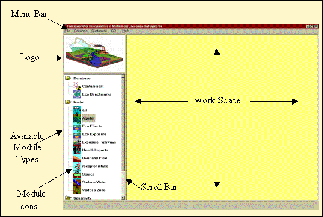
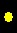

|
 |
 |
 |
Framework for Risk Analysis for Multimedia Environmental Systems
Version 1.3
On-Line Help
Table of Contents
- Overview of FRAMES
- Basic Steps in a Scenario
- Opening and Saving a New Case (GID FILE)
- Building a scenario
- Icon Identification Table
- Icon Identification
- Inserting and Arranging Icons
- Connecting Icons
- Lighting System
- Setting Up a Model
- Viewing Results
- Printing a Scenario
- Customizing Workspace
- Sensitivity/Uncertainty
- Contact Information
- Glossary - Available on FRAMES website.
Overview
-
This Help File describes how to set up and run cases
using the FRAMES (Framework for Risk Analysis in Multimedia Environmental
Systems) software system. These instructions assume that the FRAMES user
interface is open on the user’s computer.
- Constituent mass remaining at source
- Constituent fluxes from source or medium
- Atmospheric concentrations and soil deposition
- Water concentrations
- Intake or dose
- Hazard quotient or risk
FRAMES (Framework for Risk Analysis Multimedia Environmental Systems ) is a software platform developed by PNNL for selecting and implementing environmental software models for risk assessment and management problems. This program is a flexible and holistic approach to understanding how industrial activities affect humans and environment. It incorporates models that integrate across scientific disciplines, allowing for tailored solutions for specific activities, and provides meaningful information to business and technical managers. FRAMES is key to identifying, analyzing, and managing potential Environment, Safety, and Health risks.
FRAMES aids the user in constructing a Conceptual Site Model--a site that is reconstructed on screen by choosing icons that represent the real or potential flow of contamination. This software platform is also an open-architecture, object-oriented system that provides an environmental database, providing a convenient list of relevant constituents from which the user may choose.
The software also allows users to choose the most appropriate codes to solve simulation requirements, and it presents graphical packages for analyzing the results.
THE PURPOSE OF FRAMES
The purpose of FRAMES is to assist users in developing environmental scenarios and to provide options for selecting the most appropriate computer codes to conduct human and environmental risk management analyses.
SYSTEM USER INTERFACE
The conceptualization of a problem is conceptual site model, which represents the analyst’s understanding of the problem, problem components, spatial relationships, and the flow of information between components. The real world is very complicated and the traditional way to approximate the real world is to simplify and compartmentalize it into more manageable “pieces.” These generally represent what we understand, tending to group all of things that we do not know or understand into a selected group of parameters; hence, our conceptualization of real the world tends to be a function of what we know and understand. The design of a framework such as FRAMES must allow this conceptualization to change and grow more sophisticated, as our understanding of the real world grows, so we may more accurately estimate the impacts associated with our anthropogenic activities.
Because the world is traditionally compartmentalized and the flow of information is from compartment to compartment, the basic conceptualization of a problem begins with a flow of information from the beginning to the end. If this happens to be over the "life cycle" of 1) a person (e.g., birth to death), 2) a process (e.g., production life cycle), 3) an activity (e.g., certain job type), or 4) a compound (e.g., traditional U.S. Environmental Protection Agency risk assessment), a beginning and end can be defined, and, hence, a flow diagram can be constructed to link the individual components. Each of the “life cycles” listed above represents, in effect, types of frameworks. To capture the structural relationship between principle components required in estimating human exposure to chemicals, multiple frameworks, representing existing legacy software, may need to be linked to provide the most scientifically defensible picture of impacts to non-agricultural chemical exposure. Because the real world is compartmentalized, each of these life cycles are also compartmentalized, meaning that various life cycles can be linked to address demanding questions associated with the identification, facilitation, and communication of generic research that will characterize people’s exposure to chemicals and raise the confidence and lower the uncertainty for quantitative estimates of exposure associated with potential human effects to chemicals.
How does a model get input and output?
FRAMES provides data file specifications that describe how all site information is stored within framework and passed between modules. These data file specifications are not associated with model-specific information, only with the transfer of information between modules or other frameworks.
How is it used? With WindowsTM-based plug-and-play interface, the user builds a Conceptual Site Model using media icons to represent the flow of contamination through the environment. Then, the user selects simulation models to be used for analysis. FRAMES allows the user to produce multiple unique analyses with one software tool.
What information is produced?
FRAMES' modularization produces several types of time-varying outputs including:
- Constituent Source and Release to Environment
- Atmospheric
- Ecological Effects
- Ecological Exposure
- Exposure Pathways
- Human Health Impacts
- Overland Flow
- Receptor Intake
- Saturated Zone
- Sensitivity / Uncertainty
- Surface Water
- Vadose Zone
Specifications for these file types can be found on FRAMES web page.
http://mepas.pnl.gov:2080/earth/earth.htm
- Gather necessary icons to simulate scenario
- Insert them into CSM
- Arrange icons in a logical layout that simulates flow of contamination
- Connect icons in order that contamination flows through them
- For each icon, select a model
- For each icon, enter in data input
- Run each icon
- Select a viewer for results
OPENING AND SAVING A CASE - Global Input Data (GID) file
 FRAMES Screen Layout figure shows FRAMES main screen that is open on desktop of your computer. menu bar, logo, available module types, module icons, scroll bar and work space are depicted in this figure.
After opening FRAMES, Main Screen will appear, characterized by a gray background. To begin a new FRAMES case, a GID file must be opened. This can be an already existing file or a new file.
CREATING A NEW GID FILE
To begin building a new case, a new GID file must be created. A GID is simply a file extension used for the user input file which is used for FRAMES. To create a new GID, click on file menu (from menu bar) and choose "New." "Global Input Data Open New" window will open, prompting the user to name a new file and place it under an appropriate folder. Though the FRAMES directory may be the default folder, it is not necessary to save GID files within the FRAMES directory. Click "Open" when a file name and path has been entered. "Create New Site" prompt window will open--enter a Site name or select the default and select 'Ok'.
OPENING AN EXISTING GID FILE
To open and work on an existing case, click on the file menu
and choose "Open." A window will appear allowing the
user to choose the desired file to open. Click "Open" after
selecting a file to open.
When a gid file is open, the work screen background is a user-defined color. See customize section for how to change this and other preferences.
On the lowest part of the FRAMES main screen, several items are displayed including: file path, Site name, Selected Icon, and Current date and time.
SAVING A GID FILE
It is best to periodically save a GID file to prevent the loss of
input. To do this, click on the File
menu and choose "Save." FRAMES will automatically save
any additional changes made from previous save.
FRAMES will also prompt the user to save the GID file when file is closed, or if a new file is being opened.
The first step in building a scenario is to gather the necessary icons. Each icon located on FRAMES toolbar represents a module to be linked together to the model site. Different icons may appear in the toolbar based on modules included in the version of FRAMES installed on your computer. For more details on icons, refer to icon identification section.
The main screen is a Conceptual Site Model (CSM) and shows the flow of contamination across the site being modeled through linked icons. CSM defines the "real world" problem in a simplified way to conduct analysis. The problem is completely defined through CSM including release scenarios, source characteristics, release mechanisms, transport pathways, exposure routes, risk end points and risk metrics.
ICON IDENTIFICATION TABLE
| NAME | ICON | DESCRIPTION |
| Air | This icon is used to select an air model. Typically, this module takes in the Air Flux File (AFF), Global Input Data (GID), and produces the Atmospheric Transport Output file (ATO). | |
| Aquifer | This icon is used to select a saturated zone model. Typically, this module takes in the Water Flux File (WFF), Global Input Data file (GID), and produces the Water Concentration File (WCF), Water Flux File (WFF). | |
| Constituent | This icon is used to select a constituent database model. | |
| Ecological Benchmarks | This icon is used to select an ecological benchmark database. | |
| Ecological Effects | This icon is used to select an ecological effects model. Typically, this module takes in the Global Input Data (GID), Body Burden (BBF), Ecological Benchmark (EBF), and Water Concentration (WCF). It produces two types of output each for time-varying concentrations and/or doses/body burdens. | |
| Ecological Exposure | This icon is used to select an ecological exposure model. | |
| Exposure Pathways | This icon is used to select an exposure pathway model. Typically, this module takes in the Source Concentration file (SCF), Water Concentration file (WCF), Atmospheric Transport Output file (ATO), Global Input Data file (GID), and produces the Exposure Pathway file (EPF). | |
| Health Impacts | This icon is used to select a health impacts model. Typically, this module takes in the Intake Pathway File Format File, Global Input Data file (GID), and produces the Health Impacts File Format. | |
| Overland Flow | This icon is used to select an overland flow model. Typically, this module takes in the Water Flux File (WFF), Global Input Data file (GID), and produces the Source Concentration File (SCF), Water Flux File (WFF). | |
| Receptor Intake | This icon is used to select a receptor intake model. Typically, this module takes in the Exposure Pathway File Format, Global Input Data file (GID), and produces Ithe ntake Pathway File Format. | |
| Sensitivity | This icon is used to select a sensitivity/uncertainty model. | |
| Source | This icon is used to select a source term model. Typically, this module takes in the Global Input Data file (GID), and produces the Source Concentration File (SCF), Air Flux File (AFF), Water Flux File (WFF). | |
| Surface Water | This icon is used to select a surface water model. Typically, this module takes in the Water Flux File (WFF), Global Input Data file (GID), and produces the Water Flux Files (WFF) | |
| Vadose Zone | This icon is used to select a vadose zone model. Typically, this module takes in the Water Flux File (WFF), Global Input Data file (GID), and produces the Water Flux File (WFF). |
Icon Identification
When icons are placed on the work screen, a computer-generated label is automatically added. The label is based on an abbreviation for the type of module and a number for the order in which icons were placed on the work screen.
These labels can be customized when the module is selected. Teh user can display both the computer-generated name and the custom name by clicking on 'Customize' located on the menu at the top of the main FRAMES screen and selecting ‘Show Object Id’.
To change the label of an icon, right click on the icon and select "General Info" from the pop-up menu. This will lead you to the Object General Information screen (sample picture below), which allows the user to change the icon label (custom name).
INSERTING ICONS INTO THE CSM
To insert an icon, double click the desired icon from the toolbar on the left side. The icon will appear on the right hand side of screen, in the CSM work screen.
ARRANGING ICONS WITHIN THE CSM
The icons can be arranged to simulate the flow of contamination across site. To move an icon, mouse left click and hold on the icon and drag to the desired location on the screen. Release mouse. Repeat with each icon until arranged as desired.
CREATING A LINKAGE
Linkages between icons simulate the flow of contamination and are necessary for the modules to determine what to input and produce. To link two icons together, hold down the shift key, then left click on the icon while dragging the cursor from one icon to the next. Release mouse and then the shift key. Repeat for each icon on the work screen. Remember to connect the database icons (i.e., FRAMES Constituent Database) to each module icon as needed.
REMOVING A LINKAGE
The link can be removed by holding down the shift key and dragging the mouse between icons.
DELETING AN ICON
To delete an icon, right click on the icon and choose 'delete' from the pop-up menu.
Any number and direction of connections is permitted between icons, however certain modules may limit the direction of connections. Linkages may be added or removed at any point in the scenario, however changing a linkage may affect the selected module. When deleting a linked icon from the screen, the attached linkages will automatically be deleted also and do not need to be removed separately.
The black side bar on the icon is a signal light. It changes color every time a step is completed.
No model selected
After naming an icon and selecting the applicable model, the light on the black side bar should be red.
Model selected, no data entered.
After entering all data in the User Input section, the light on the black side bar should be yellow.
 Model selected, data entered.
When the data entry is finished, and the models have been run, every model will run in a MS-DOS screen before returning to the main FRAMES window. Only then will the icon with the black side bar have a GREEN signal light. Databases, unlike models, do not need the third option (Run Model) selected on the right-click pop-up menu, so the yellow light never appears for the Constituent icon.
Model selected, data entered, module successfully run.
SELECTING A MODEL
To select a specific model for an icon, first ensure that all module connections are complete, then right-click on the icon and choose "General Info." The model selection screen will appear. The General Information screen has a list of applicable and nonapplicable models. Select the model and view the description on the screen. If the model you need is under the nonapplicable section, return to the main FRAMES screen and check that the connections between models are flowing in the correct direction.
(Note: icon label can also be customized on this screen. For more details, go to icon identification section).
INPUTTING DATA INTO A MODEL
To input data into a model from a module type icon, right-click and
choose "User Input." The model’s specific user interface will appear.
Some FRAMES models have a color-coded User Input section. Boxes will be shaded either red or green. A red box signifies missing information that needs to be filled in. The user will be unable to continue if the red boxes are not filled in. A green box signifies that data is acceptable.
FRAMES User-Defined models do not use the color-coded User Input, so confirm that all sections were completed before continuing.
The user must also make sure that the inputted values are within a specified numeric value range. This can be found at the bottom of the screen, once the parameter is selected.
Once data is entered completely, the status light will be yellow. Click for more details on lighting system.
RUNNING A MODEL
To run each model separately after the User Input has been completed, right-click on the module icon and choose 'Run Model' from the pop-up menu. FRAMES user interface will close and model will run in a MS-DOS screen before returning to main FRAMES window.
The "GO" button serves as an alternative way to run models. After inputting data into all modules (when all modules have yellow lights), click the "GO" button located on the toolbar. The Go Button allows the user to run all models in sequence once the User Input has been completed for all modules. This option will not run the sensitivity/uncertainty module.
The FRAMES user interface provides viewers that allow users to view text and graphical information produced by modules that meet the FRAMES data file specifications as described on FRAMES homepage.
To view results, the signal light on module must be green, signaling that the run has been completed. Right-click on the module icon and select the "View/Print Module Output" from the pop-up menu. Select the desired viewer from the View/Print Module Output list. There are at least two choices for each viewer attached to a module: a graphical and text viewer. To see teresults in various viewers, reselect a different viewer. The results can be printed or saved to a file.
The following tables provide a specific list of applicable viewers and file extensions.
| Module | Applicable Viewers for Module |
| Source Term | AFF Chart, AFF Viewer, WFF Chart, WFF Viewer |
| Vadose Zone | WFF Chart, WFF Viewer |
| Ground Water | WCF Chart, WCF Viewer, WFF Chart, WFF Viewer |
| Surface Water | WCF Chart, WCF Viewer |
| Atmospheric Transport | ATO Viewer, GNUPLOT Concentrations |
| Exposure Pathway | EPF Chart, EPF Viewer |
| Receptor Intake | RIF Chart, RIF Viewer |
| Human Health Impact | Five new HIF viewers include a tabular viewer that sums the risks/hazards for all exposure pathways, routes, and media for a starting point in time, location, constituent, age group, and target organ, and can be categorized by three sets of health metric: a) risk from carcinogenic chemicals, b) hazard from noncarcinogenic chemicals, and c) risk from radionuclides. |
| Sensitivity Uncertainty | SUF Chart, SUF Viewer |
following chart defines different FRAMES file extensions:
| AFF | Air Flux File |
| ATO | Atmospheric Transport Output File |
| BBF | Body Burden File |
| EBF | Ecological Benchmarks File |
| EPF | Exposure Pathways File |
| ERR | Error File |
| EXF | Exposure Effects File |
| GID | Global Input Data File |
| HIF | Health Impacts File |
| RIF | Receptor Intakes File |
| SCF | Soil Concentration File |
| SUF | Sensitivity Uncertainty File |
| WCF | Water Concentration File |
| WFF | Water Flux File |
Once the scenario is complete, components can be printed to a file or printer for documentation.
Click on the File menu from the menu bar and select Print. The print form will display all modules for all scenarios and checkboxes for the user to select which components to print.
Click Preview the checkbox to see what will be printed before actually doing so. As you change selections, the contents of the preview panel will change.
Click Print to select a Printer and set print options.
Click Print again to print the document. If you have checked "Print to Fil"e you will be prompted to select or name the output file; click Open to confirm or Cancel.
Confirm "Print to File" by opening the output file with a word processor to verify the contents. Click Close to return to the FRAMES screen.
The font, background color and linkage color can all be customized. To view the options for the customizing screen, click on the ‘Customize’ menu located on the top menu bar.
SHOW OBJECT ID (IDENTIFICATION)
Click on "Show Object ID" to show the object ID or not. The object ID is usually a cryptic number and letter combination such as src2. For more information regarding icon ID, refer to the Icon Identification section. The object ID is also same as the default label that is given to the icon when the icon is first inserted into the CSM.
SHOW ICON
Click on "Show Icon" to view module icon as well as text, or simply view text. This option only affects the module type outline on the left side of the screen.
FONT
Click on "Font" to customize the font, style, and size of text within the FRAMES Interface.
COLOR
Click on "Color" to customize the color of background, text, and linking arrows for the FRAMES Interface. The options for customizing linkages include Database Connection, Model Connection, Sensitivity Connection, and Viewer Connection. The visible box should be checked as default, but may be unchecked if so desired.
LOGO
Click "Logo" to show or hide the Logo. In addition, this feature allows the user to select a logo to use one from a file. In the upper left corner of the FRAMES screen, above the Icon toolbar, an optional logo can be shown. Click the Customize menu from the menu bar and select Logo > Select. The file selection menu will open with all the picture files shown (i.e., *.jpg, *.bmp, *.ico). Select one of the pictures from the list in the default FRAMES folder, or use a user-created picture file. Click Open and the new logo will be displayed. To hide the logo, select Logo > Hide.
Sensitivity Uncertainty
To conduct a sensitivity or uncertainty analysis on the module input values, place a Sensitivity module on the workspace. Then connect it to all modules that you are interested in either stochastically running inputs or that you would like the outputs to be reported. View the SUM3 User's Guide on FRAMES Homepage for more information.
Contact for User Support
Gariann GelstonP.O. Box 999 MS K7-97
Richland, WA 99352
Phone: (509) 372-6060
Fax: (509) 375-5921
Email: gariann.gelston@pnl.gov
Webmaster: Melany Eslinger
Date Reviewed: July 14, 2002